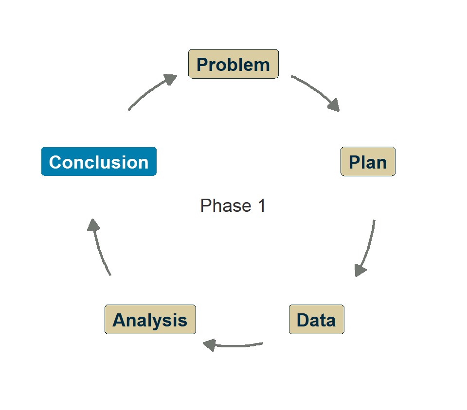
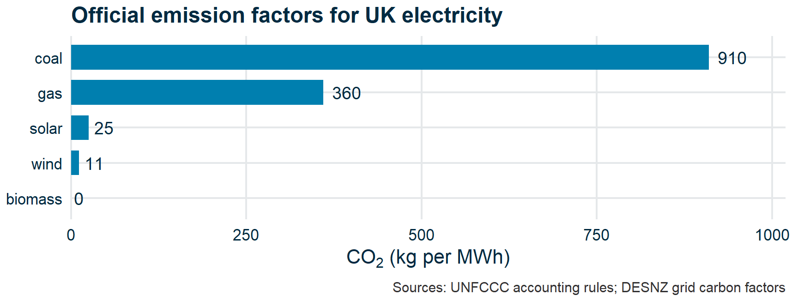
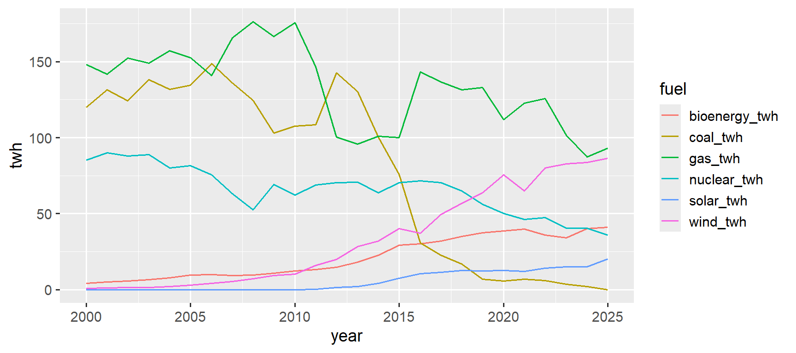
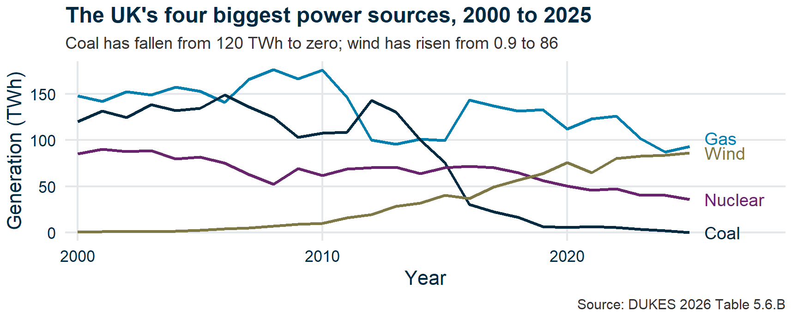
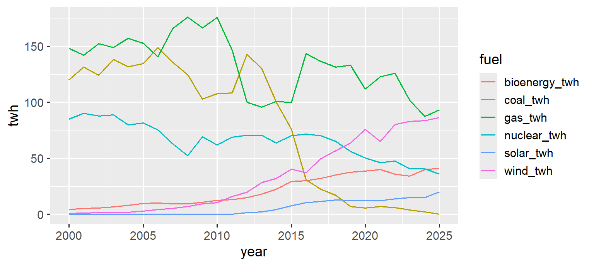
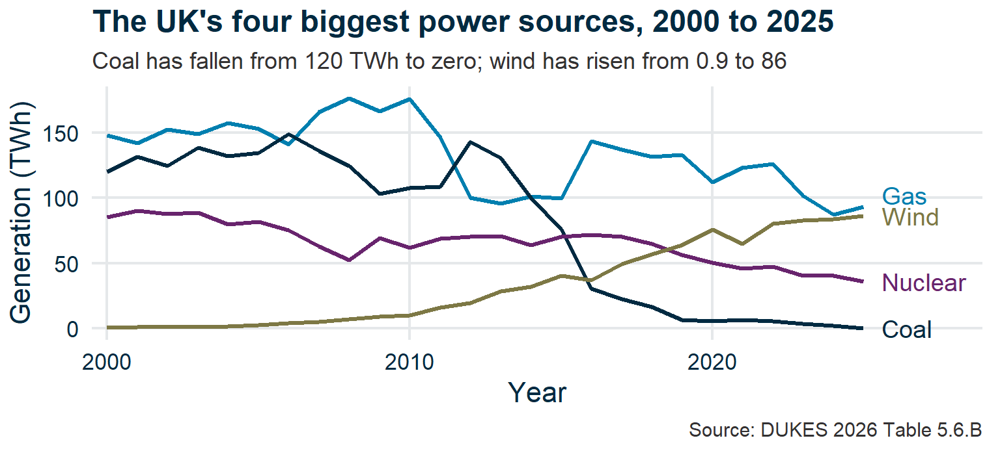

Making the case
Research Skills — Week 4
Recap
Recap
- Writing for a policy audience
- Write a summary
- How to lie with statistics
- “What’s missing?”
- Effective figures for a briefing
- The briefing assignment
- Wrap-up
The journey so far
- Week 1: Does biomass help reach net zero? (Curiosity)
- Week 2: The numbers are interesting (Discovery)
- Week 3: The answer depends on the assumptions (Doubt)
Week 4: Write it up. Make the case. And learn to spot when someone else isn’t making it honestly.
Questions?

Submit questions:
PollEv.com/geol
text geol to 07480 781235
Writing for a policy audience
- Recap
Writing for a policy audience
🎓 Concept block 1
- Write a summary
- How to lie with statistics
- “What’s missing?”
- Effective figures for a briefing
- The briefing assignment
- Wrap-up
Who is your reader?
A policy-maker: busy, not a specialist, needs to make a decision.
What they need:
- A clear bottom line
- Evidence they can trust
- Honest acknowledgement of uncertainty
Structure of a policy briefing
| Section | Purpose |
|---|---|
| Summary | The answer — first. Reader could stop here. |
| Evidence | Figures, data, analysis |
| Caveats | What’s uncertain, what depends on assumptions |
| Conclusions | Recommendation, with caveats attached |
Compare to an academic paper: background first, answer last.
A briefing is the opposite — answer first, evidence after.
A real parliamentary briefing
Governance of solar radiation modification research — POSTnote 773, Parliamentary Office of Science and Technology, 13 July 2026.
https://post.parliament.uk/research-briefings/post-pn-0773/ · DOI 10.58248/PN773
| POST’s sections | Our structure |
|---|---|
| Overview and key points | Summary — the answer, first |
| How the research is conducted; funding figures | Evidence |
| Geopolitics; ethics and legislation | Caveats |
| What has been tried already | Conclusions |
The summary test
If your reader stops after the first paragraph, do they know:
- What you investigated?
- What you found?
- What you recommend?
Write a summary
- Recap
- Writing for a policy audience
Write a summary
💬✏️ Exercise 1
- How to lie with statistics
- “What’s missing?”
- Effective figures for a briefing
- The briefing assignment
- Wrap-up
10 minutes
Write a 3–4 sentence summary of your biomass findings, aimed at a government minister.
Then we’ll share a few.
Is the message clear? Is the uncertainty honest? Would a minister know what to do?
How to lie with statistics
- Recap
- Writing for a policy audience
- Write a summary
How to lie with statistics
🎓 Concept block 2
- “What’s missing?”
- Effective figures for a briefing
- The briefing assignment
- Wrap-up
Same data – two conclusions
Two reports present the same data in different ways.
Both are technically accurate.
One is honest. The other is not.
Two exemplar reports
Faithful report
Balanced evidence. Honest caveats. Uncertain where the data are uncertain.
Traitor report
Selective evidence. Misleading framing. Confident where it shouldn’t be.
Ardross Castle, where The Traitors is filmed.
Derek Spence / Geograph, CC BY-SA 2.0
Let’s look at the techniques.
Technique 1: Cherry-picking
Choose the number that tells your story.
Example: energy per AI query — 0.3 Wh (Epoch AI’s estimate for a typical query) or 18.9 Wh (one lab’s estimate for a newer model). Same question, 63× difference, depending on which you cite.
Technique 2: Invalid chart type
The chart is “technically correct” but visually lies.
Technique 3: Cross-scale conflation
Compare a small thing to a big thing without adjusting the scale.
Example: “By 2030, AI alone could be consuming more electricity than every home, factory, office, and railway in Britain combined.”
Both numbers are real: 347 TWh for AI, 319 TWh for the UK. But one is the whole world, projected for 2030; the other is one country, measured in 2024.
Technique 4: Omission
What you don’t show matters as much as what you do.
Example: the traitor report never asks what an AI query replaces. A query that saves one minute of laptop time (0.45 Wh) has more than paid for its own 0.3 Wh. With no benefit side, every cost looks like pure loss.
The lesson
The most dangerous misinformation is technically sourced.
You can’t just fact-check the numbers — you have to audit the choices.
“What’s missing?”
- Recap
- Writing for a policy audience
- Write a summary
- How to lie with statistics
“What’s missing?”
💬 Exercise 2
- Effective figures for a briefing
- The briefing assignment
- Wrap-up
Spot the omission

What’s been left out? How does the omission change the impression?
Attendance
Effective figures for a briefing
- Recap
- Writing for a policy audience
- Write a summary
- How to lie with statistics
- “What’s missing?”
Effective figures for a briefing
🎓 Concept block 3
- The briefing assignment
- Wrap-up
Principles (revisited)
- Every figure needs a “so what” — what should the reader take from it?
- Don’t show everything. Show the thing that matters.
- Captions tell the story, not just the axes.
- Label directly rather than relying on legends.
Before

1 So what? 2 Show what matters 3 Captions tell the story 4 Label directly
After

1 So what? 2 Show what matters 3 Captions tell the story 4 Label directly
Before and after
| Before | After | |
|---|---|---|
|
 |
 |
Same data, same file. What changed — and which change did the most work?
| Series | All six fuels | The four largest by mean over 2000–2025 |
| Labels | A legend, alphabetical by column name — nothing to do with size | Each line named at its end, in its own colour |
| Y axis | twh |
Generation (TWh) |
| Words | None | A subtitle saying what to look at; a named source |
| Panel | Default grey | White, faint gridlines |
The briefing assignment
- Recap
- Writing for a policy audience
- Write a summary
- How to lie with statistics
- “What’s missing?”
- Effective figures for a briefing
The briefing assignment
📋🎓 Assignment and traitors
- Wrap-up
Your assignment
Write a ~2-page policy briefing answering:
“Does UK biomass power help reach net zero, and should we keep paying for it?”
Due: committed to your GitHub repo by the end of the application session.
Structure: summary → evidence (with figures) → caveats → conclusions.
Peer review
You will each be assigned two classmates’ briefings.
One Issue per briefing — clarity, evidence, uncertainty, verdict.
The review form opens with two drop-downs a script reads:
Verdict FAITHFUL / SUSPECT
Argues KEEP-OR-EXPAND / KEEP-ONLY-WITH-CCS / PHASE-OUTTwo questions, not one
Do you believe it? — and, separately — what is it arguing?
A briefing can reach the conclusion you already hold and still be a traitor’s.
The traitors
Some of you will write deliberately misleading briefings.
You are not choosing. If you are a traitor, you have already been told — privately, and only you were told.
Everyone else: read carefully. Not everything is what it seems — including the things you agree with.
Wrap-up
- Recap
- Writing for a policy audience
- Write a summary
- How to lie with statistics
- “What’s missing?”
- Effective figures for a briefing
- The briefing assignment
Wrap-up
Any questions we missed?
Submit questions:
PollEv.com/geol
text geol to 07480 781235
Next time
Application session: “Write, review, reveal”
Three phases:
- Write your briefing (45 min)
- Review two others’ (30 min)
- The reveal (25 min)
Come ready to write. Your figures from Weeks 2–3 are your evidence.
The reveal is built from the reviews you file — so file them properly.